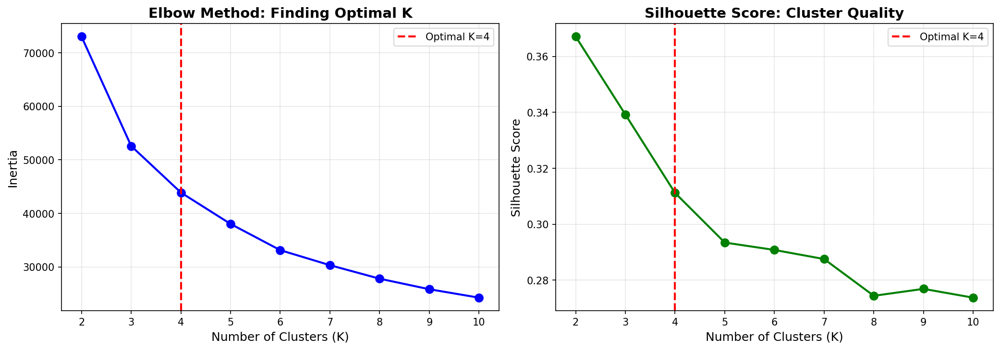
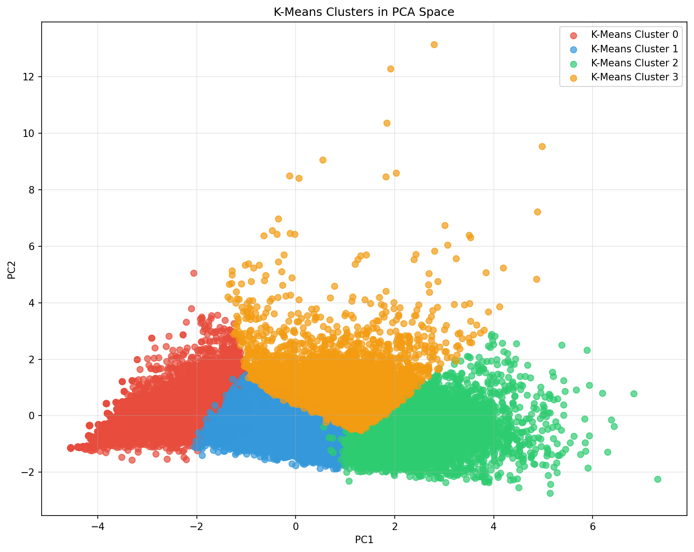
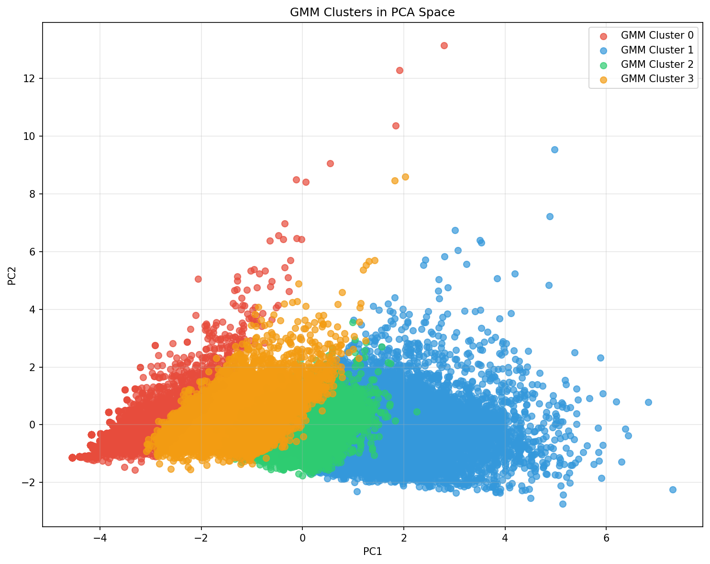
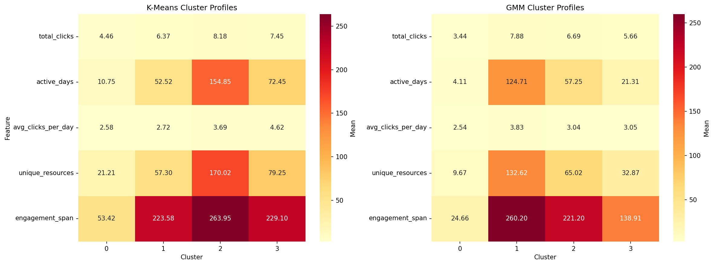
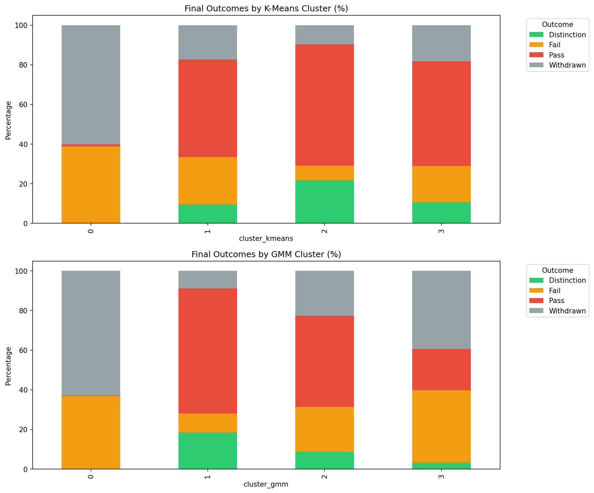

🔬 K-Means vs Gaussian Mixture Model
Comprehensive Comparison of Two Clustering Approaches on Student Engagement Data
Why 4 Clusters?

PCA Visualization Comparison
K-Means Clusters

GMM Clusters

Observation: Both models separate students well in PCA space.
K-Means tends to create more spherical clusters, while GMM can capture more elliptical/overlapping groups.
Cluster Behavior Profiles

Academic Outcomes Comparison

Outcome Success Rates by Cluster
K-Means
| Cluster | Success Rate
(Pass + Distinction) | Fail Rate | Withdrawn |
|---|
| Cluster 0 |
1.1% |
38.7% |
60.2% |
| Cluster 1 |
58.4% |
24.1% |
17.5% |
| Cluster 2 |
82.9% |
7.4% |
9.7% |
| Cluster 3 |
63.6% |
18.2% |
18.2% |
GMM
| Cluster | Success Rate
(Pass + Distinction) | Fail Rate | Withdrawn |
|---|
| Cluster 0 |
0.4% |
36.9% |
62.7% |
| Cluster 1 |
81.6% |
9.5% |
8.9% |
| Cluster 2 |
54.6% |
22.7% |
22.7% |
| Cluster 3 |
23.9% |
36.7% |
39.4% |
💡 Key Insights from Model Comparison
- Silhouette Score: K-Means slightly edges out GMM in this dataset (0.311 vs 0.168)
- Flexibility: GMM can model more complex cluster shapes and provides probability of membership
- Predictive Power: Both identify high-risk and high-performing groups effectively
- Recommendation: Use K-Means for simplicity and interpretability; GMM when clusters may overlap or have different variances
Generated on December 14, 2025 • Python • scikit-learn • matplotlib • seaborn